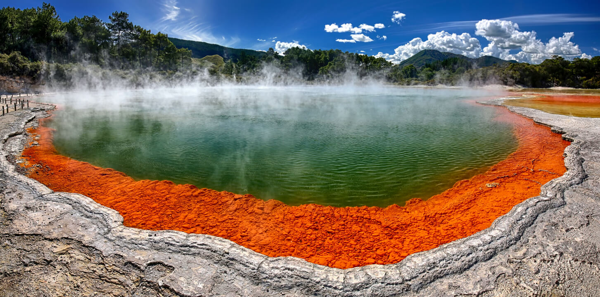
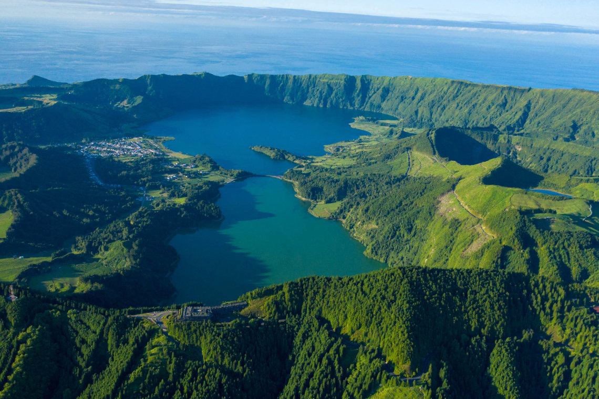
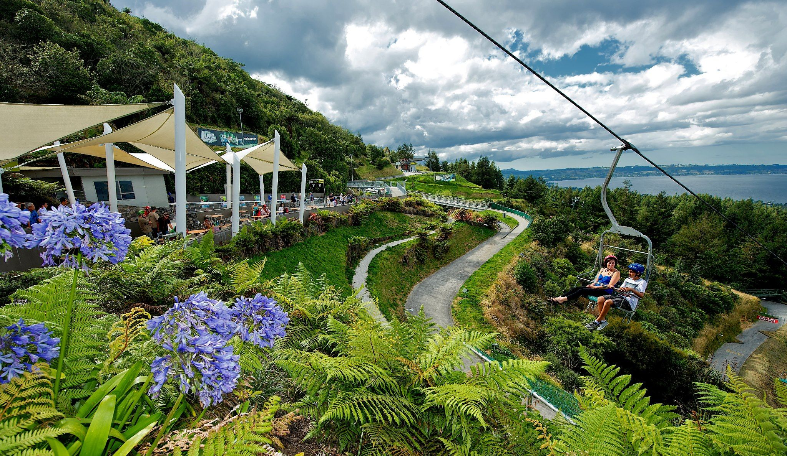
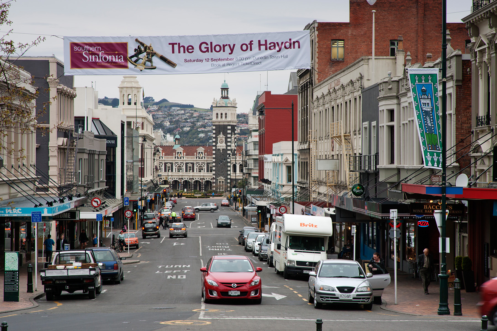
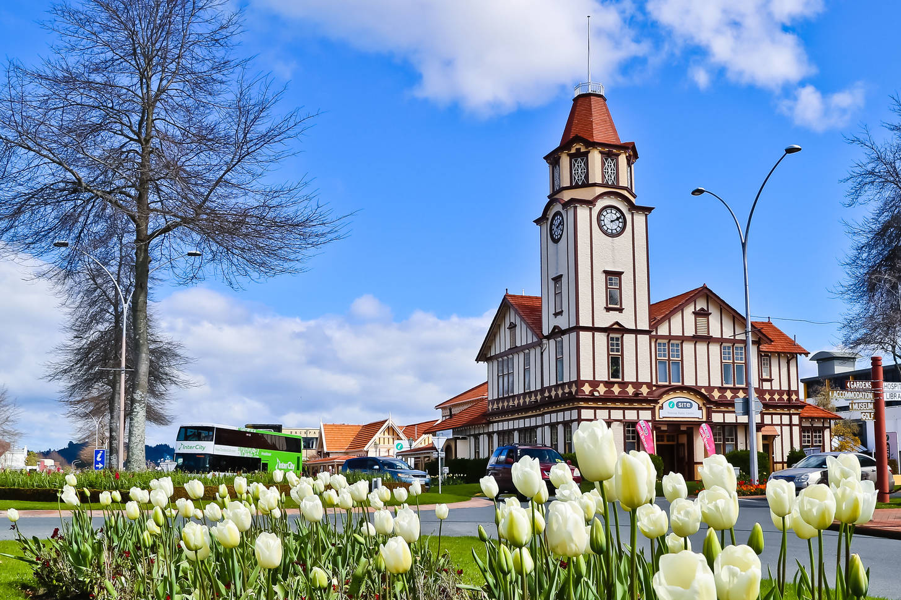
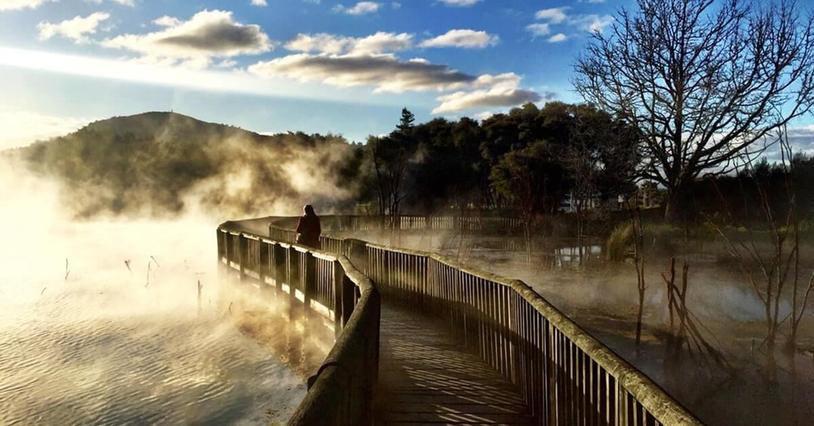

Top experiences in Rotorua
From crystal-clear streams and magical forests, to epic biking trails and thermal mud pools, Rotorua has it all.
Mata air dan kolam mineral panas menjanjikan relaksasi maksimum di Rotorua, pulau utara di Selandia Baru. Kolam terapi lumpur panas, air mancur panas yang mengagumkan, dan sebuah desa yang terkubur mudah dijangkau dari kota. Pengalaman melihat semburan lumpur panas di "Rotovegas", daerah di bagian atas FentonStreet, tidak akan terlupakan. Setelah puas menyaksikan lumpur, naiklah ke ketinggian hampir 2.000 meter dengan Skyline Gondola untuk melihat pemandangan Danau Rotorua. Setelah itu, jelajahilah danau dengan kapal uap, kapal nelayan sewaan, atau kendaraan amfibi dari Perang Dunia II.y
  Rotorua adalah sebuah kota di tepi selatan Danau Rotorua di region Bay of Plenty di Pulau Utara di Selandia Baru, dan Distrik Rotorua mencakup daerah otoritas lokal. Kota ini memiliki jumlah penduduk 59,500, di distrik 72,500[1]. Terletak 60 km di selatan Tauranga, 105 km di tenggara Hamilton dan 82 km di timur laut Taupo. Distrik ini terbagi antara Bay of Plenty (61.52 persen wilayahnya) dan Waikato (38.38 persen). Pinggiran Rotorua adalah Ngongotaha, Fairy Springs, Selwyn Heights, Kawaha Point, Western Heights, Pukehangi, Pleasant Heights, Mangakakahi, Sunnybrook, Pomare, Utuhina, Ohinemutu, Koutu, Hillcrest, Matipo Heights, Glenholme, Fordlands, Springfield, Rotorua West, Fenton Park, Whakarewarewa, Waipa Village, Tihiotanga, Ngapuna, Lynmore, Te Ngae, Owhata, Hannahs Bay, Holdens Bay dan Rotokawa. Rotorua terkenal karena aktivitas geotermalnya. Terdapat sejumlah geyser, yang terkenal geyser Pohutu di Whakarewarewa, dan kolam lumpur panas di kota ini, yang berasal dari kaldera Rotorua. Karena keunikannya ini, Rotorua memenangkan "Penghargaan Kota Terindah di Selandia Baru" tahun 2002 dan 2006.[2]
  The city offers a raft of attractions and experiences for everyone from adventure-seekers to those just looking to unwind. The scenic Tarawera Trail(opens in new window) treks through lush native bush with clear views of Lake Tarawera, the trail ends with a dip steaming hot pool - walk the trail in and take the water taxi back. Sitting within the Pacific Rim of Fire, Rotorua is a geothermal wonderland with bubbling mud pools, clouds of steam, and natural hot springs perfect for bathing and relaxing in. After marvelling at the distinctive landscapes and volcanic activity within a geothermal park, enjoy a simple soak in a natural hot stream or indulge in a wellness getaway at a luxurious spa. View the video here(opens in new window) to explore activities in Rotorua. Experience Māori culture, hospitality and food here - try a hangi feast cooked in the steaming ground or take a tour of an authentic pre-European village. The city is surrounded by mountains, rivers, native forests and 18 fresh water lakes, making it the perfect place to reconnect with nature. Rotorua is a mountain biking mecca with world-class mountain bike trails. Walking, horse riding, and swimming or fishing in the lakes and rivers are some of the best ways to see the wildlife, breath-taking scenery and discover the region’s hidden gems. It’s also a big trout fishing area with fishing on the lakes and tributary rivers and if you’re unlucky there you can sight some of the huge trout (but, alas, not catch them) at Rainbow and Fairy Springs. For thrill seekers, Rotorua is home to the highest commercially rafted waterfall in the world, and offers everything from bungy jumping and luging to zorbing and ziplining. Families with children of all ages will love the great range of leisure and wildlife parks. When it comes to food and drink, Rotorua boasts a thermally-heated central city alfresco dining zone known as Eat Streat, as well as a number of popular food and craft markets. Located in the heart of the North Island, Rotorua is also the gateway to other central destinations - it's less than two hours to the Mt Ruapehu ski fields and less than an hour from the nearest beach towns.